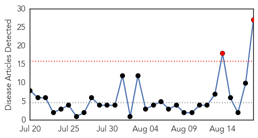
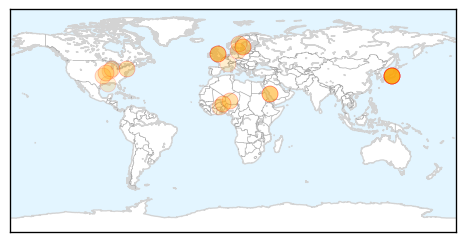
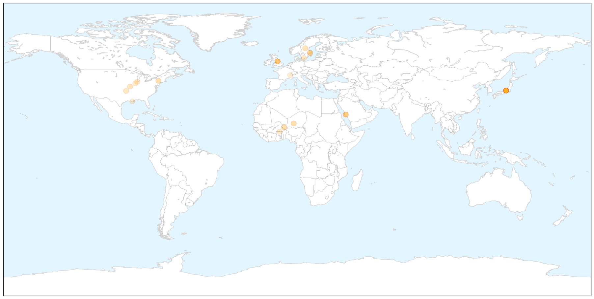

Meningitis
30-Day Web Trend
2 alerts, 0 warnings

30-Day Twitter Trend
2 alerts, 0 warnings

Article Locations

X

Article Confidences

Top Articles:
- 0.989
- Meningitis C vaccine shortage prompts fears of major outbreak in Africa
- 0.982
- Meningitis C vaccine shortage in Africa
- 0.971
- New meningitis case reported in Highlands
- 0.962
- What to know about meningitis for World Meningitis Day
- 0.935
- Beware of respiratory diseases
- 0.908
- All you need to know about Haj vaccinations
- 0.893
- Sweden confirms meningitis after Japan scout jamboree
- 0.883
- Sweden confirms meningitis after Japan scout jamboree
- 0.866
- Fourth meningitis case as parent of Scout diagnosed with disease
- 0.851
- Three Scottish scouts treated for meningitis after Japan trip
- 0.817
- Vaccination now required for students living on campus
- 0.807
- Sweden confirms meningitis case in girl after Japan scout jamboree
- 0.754
- Swedish officials confirm scout has meningitis
- 0.733
- Swedish scouts treated after meningitis scare
- 0.724
- How a Tick Bite Led to Multiple Limb Amputations for One Oklahoma Woman
- 0.693
- UK meningitis warning after Scottish Scouts catch disease on Japan trip
- 0.687
- Teenage scout diagnosed with meningitis in Stockholm - Radio Sweden
- 0.682
- Sweden suspects meningitis outbreak at scout camp in Japan
- 0.663
- Bottled water buys, chlorine burns follow amoeba discovery
- 0.657
- New vaccine requirements take effect as school begins
- 0.650
- Walk-in clinic allows students to get meningitis vaccine
- 0.643
- Sweden suspects meningitis outbreak at scout camp in Japan - MyNorthwest
- 0.635
- Human health vulnerability to climate change in Ghana
- 0.576
- Cases of meningitis linked to Scout trip rises
- 0.570
- Brain-eating amoeba found in Terrebonne Parish water system, officials say
- 0.558
- Sweden suspects meningitis outbreak at major scout jamboree in Japan
- 0.532
- Amoeba discovered in part of Terrebonne Parish water system
Top Tweets:
-
No tweets found for Aug 18, 2015